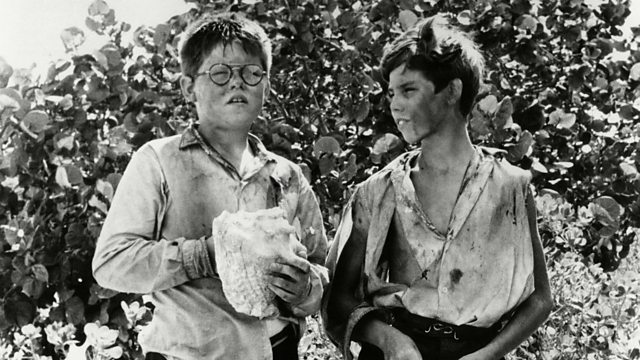

Monday, September the 11th, 2017
back to: title, date or indexes

Poor scribblers whose efforts are repeatedly rejected find solace from cases such as William Golding, who sent the manuscript of his first novel to more than twenty publishers before it was eventually accepted. Although stubborn persistence can sometimes pay off, the example of Golding demonstrates that, when a sympathetic editor offers advice, it can be wise to take it. Thus it is useful to learn that the beardy author made several changes to his book, which started out as the tale of a group of schoolboys trying desperately to remove a blockage of pig fat from a heating duct. He also changed the original title, Lard Of The Flues.